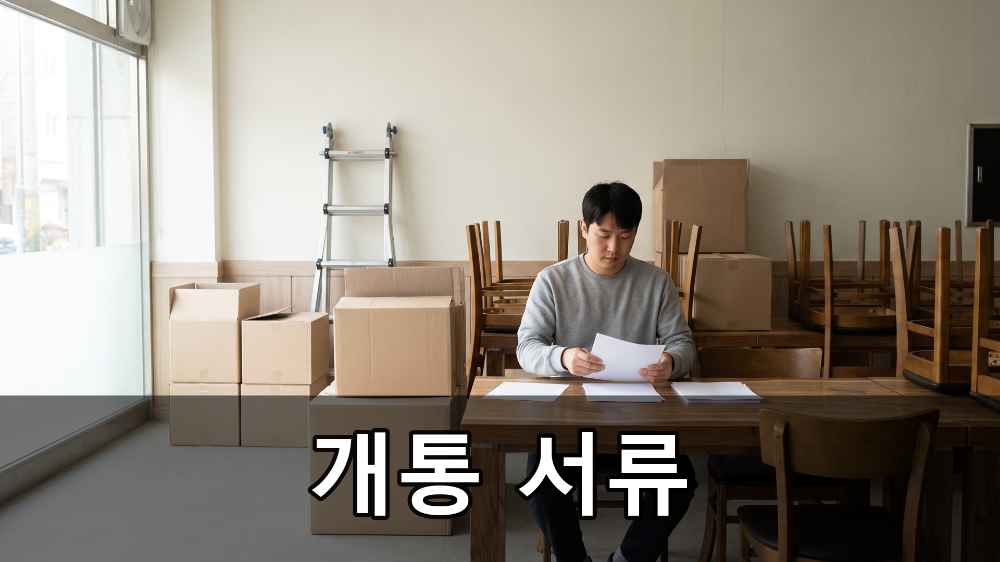
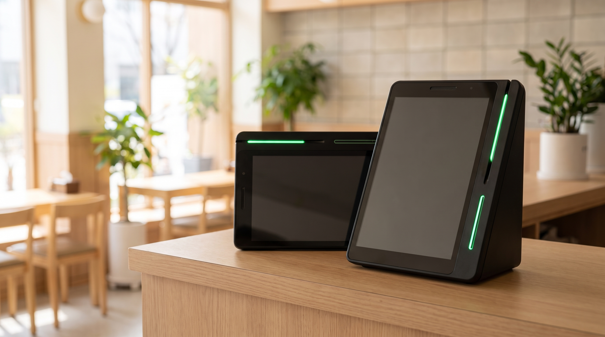

신용카드단말기, 매장 개통까지 사장님이 준비할 서류 5가지 — 네이버단말기 설치
계약은 했는데 언제 무엇이 오는지 모르겠다는 말씀을 많이 듣습니다. 오픈 날짜는 정해져 있는데 결제만 붕 떠 있으면 마음이 급해지죠. 오늘은 개통까지 사장님이 손수 챙겨야 할 것들을 순서대로 정리했습니다.
결론부터 말씀드리면, 신용카드단말기 개통은 기기가 아니라 서류에서 시작합니다.
- 사업자등록증
상호·주소·업태가 실제 매장과 일치해야 합니다. 이전이나 업종 변경을 하셨다면 최신본으로 다시 발급받아 두시는 편이 빠릅니다.
- 대표자 신분증
사본 제출이 일반적이며, 사업자등록증의 대표자명과 글자가 정확히 같아야 합니다. 법인이면 법인 관련 서류가 추가로 필요합니다.
- 매장 명의 통장 사본
매출 대금이 들어올 계좌입니다. 개인 명의로 하실지 사업자 명의로 하실지 먼저 정해 두셔야 뒤에 바꾸는 번거로움이 없습니다.
- 업종에 따른 인허가 서류
음식점은 영업신고증, 일부 업종은 별도 등록증이 필요합니다. 어떤 서류가 해당되는지는 업종마다 달라 미리 확인해 두시는 편이 안전합니다.
- 매장 확인 절차
간판과 내부가 보이는 사진을 요청받거나 방문 확인이 이뤄지는 경우가 있습니다. 공사가 끝나기 전이라도 간판이 올라간 뒤로 일정을 잡으면 한 번에 끝납니다.
- 개통 뒤 첫 정산을 확인합니다
첫 매출이 통장에 어떻게 들어오는지 한 번만 눈으로 확인해 두세요. 심사 기준과 정산 주기는 카드사·계약 조건에 따라 달라지므로, 계약하신 곳의 최신 안내를 직접 확인하시는 편이 정확합니다.

서류가 모이면 그다음은 설치 일정입니다. 네이버 예약이나 주문을 함께 쓰실 계획이라면 네이버단말기를 개통 단계에서 같이 검토하시는 편이 나중에 손이 덜 갑니다. 정품 신제품 보증 · 수도권 직영 설치를 원칙으로 하고 있어, 오픈 일정만 알려 주시면 역산해서 잡아 드립니다.
개통이 늦어지는 회차는 대부분 서류 한 장이 비어서입니다. 위 다섯 가지를 한 봉투에 모아 두시면 그날로 끝나는 경우가 많습니다.
- 📞 전화상담 1544-7754
- 🌐 홈페이지 https://nwpos.co.kr

📷 인스타그램 팔로우 https://www.instagram.com/nurinetworkspos

▶️ 유튜브 구독 https://www.youtube.com/@nurinetworks
(2026년 8월 기준 · 심사 기준과 필요 서류는 카드사·업종에 따라 달라질 수 있어 계약처 안내를 확인해 주세요)